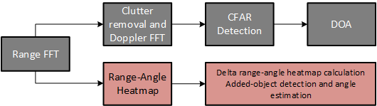

# CLI Commands for Static Object Detection
===========
## Cli Commands Overview
The types of CLI commands used with static object detection labs can be categorized as below:
* Standard mmWave SDK out of box commands
* Refer to the mmWave SDK user’s guide to understand the details of these commands
* `C:\ti\mmwave_sdk_[VER]\docs\mmwave_sdk_user_guide.pdf`
* Group Tracker CLI commands
* Refer to the customization guide found in the People Counting directory
* `C:\ti\mmwave_industrial_toolbox_[VER]\labs\people_counting\docs`
* Static Object Detection CLI commands
* These commands are implemented for the static detection DPU and further details are below.
## Notes on Static Object Detection
When aiming to detect static objects that have been added to a space, the object reflections must be separated from the background static scene.
Static reflections not only come from the object of interest, but also from the ground, door frame, ceiling, wall and other furniture.
In order to separate object of interest from the background scene, a calibration step is applied. During installation stage, the background information is recorded.
After that, the recorded background information will be subtracted from the current frame to detect the added scene and new static objects.
This background information can be captured in different formats. One approach is to save the averaged range FFT output (complex value) for all antennas.
This method has very good sensitivity, but may suffer from phase change during temperature change or power restart.
The approach used in the static object detection DPU is to record the range-angle spectrum (also referred as range-angle heatmap). The recorded spectrum is in power and therefore it is not phase sensitive.
The system block diagram is shown below. The block in pink is the added logic for added static object detection.
[[b! Note
This is for detection of **newly added** static objects. Static objects present during the calibration recording would not be detected since their signal is subtracted out.
]]

## CLI Commands for Static Object Detection
### 1. heatmapGenCfg
It contains the parameters that controls the range-angle heatmap calculation. An example is given below.
* heatmapGenCfg -1 1 0.0 10 50 60.0 3.0 10
CLI Command | Parameter Name | Description
----------------|------------------- |------------------------
heatmapGenCfg | subFrameIdx | set to -1 to apply to all the subframes
| recordingMode | set to 1 to start with static recording first
| phaseRotDeg | set to 0 for now
| minRangeBin | the minimum range bin for range-angle heat-map generation. It will affected the minimum detectable range bin to be: minRangeBin + 1
| maxRangeBin | the maximum range bin for range-angle heat-map generation. It will affected the maximum detectable range bin to be: maxRangeBin - 1
| maxAngleDeg | the angle range for angle spectrum calculation will be (-maxAngleDeg:angleStepDeg:maxAngleDeg)
| angleStepDeg | the step size for angle spectrum calculation. Suggested angleStepDeg value is 1~3 degrees.
| rangeBinForNoiseLevelCalc | The range bin used for noise floor calculation
### 2. staticDetectionCfg
It contains the parameters that control the logic for static object detection. An example is given below.
* staticDetectionCfg -1 0 -50.0 +50.0 -30.0 20.0 0.3 4.0 0.1 4
CLI Command | Parameter Name | Description
---------------- |------------------- |------------------------
staticDetectionCfg | subFrameIdx | set to -1 to apply to all the subframes
| numAngleBinToSum | set to 1 to start with static recording first
| minAziAngleDeg | set to 0 for now
| maxAziAngleDeg | the minimum range bin for range-angle heat-map generation. It will affected the minimum detectable range bin to be: minRangeBin + 1
| minEleAngleDeg | the maximum range bin for range-angle heat-map generation. It will affected the maximum detectable range bin to be: maxRangeBin - 1
| minEleAngleDeg | the angle range for angle spectrum calculation will be (-maxAngleDeg:angleStepDeg:maxAngleDeg)
| localPeakTH | the step size for angle spectrum calculation. Suggested angleStepDeg value is 1~3 degrees.
| heatmapDiffTH | The range bin used for noise floor calculation
| significantTH | a detected peak energy has to be bigger than the maximum recording by this linear threshold. It is suggested to set this parameter between 0.1~0.4. Increase this value can reduce the false detection.
| eAngleBinDiffTH | The maximum elevation peak location difference between delta elevation heat-map and current heat-map. If the peak location difference is too large, it means this add-on object is not the dominant object in the range-elevation heat-map. And therefore, the estimation may not be very accurate, and the detected peak will be skipped.
| heatmapDiffToNoiseTH | The heat-map difference needs to be higher than the noise level by this threshold.
For the add-on static object to be detected, it needs to create a peak on the delta heat-map (the difference between the recorded range-azimuth heat-map and the current range-azimuth heat-map).
This peak level should be significant compared to the original heat-map. At the same time, the location should be within the angle of interests in both azimuth domain and elevation domain.
Note that we have seen some detected points with poor accuracy. The poor accuracy very often comes from the elevation angle estimation.
To improve that, we added the feature to skip the detection if this adds-on is not the dominant object in the range-elevation heat-map.
We also observed that at the ranges bins that noise is dominant, there is some false detection due to the noise variation.
We therefore added the logic to calculate the noise level and a valid detection has to be larger than the noise level by a threshold.
[[b! Note
The cfarCfg, multiObjBeamForming, clutterRemoval, aoaFovCFg, and cfarFovCfg commands from the mmWave SDK commands only apply to the top branch of the block diagram for dynamic (moving) point detection.
These commands have no bearing on the static point cloud detection.
]]